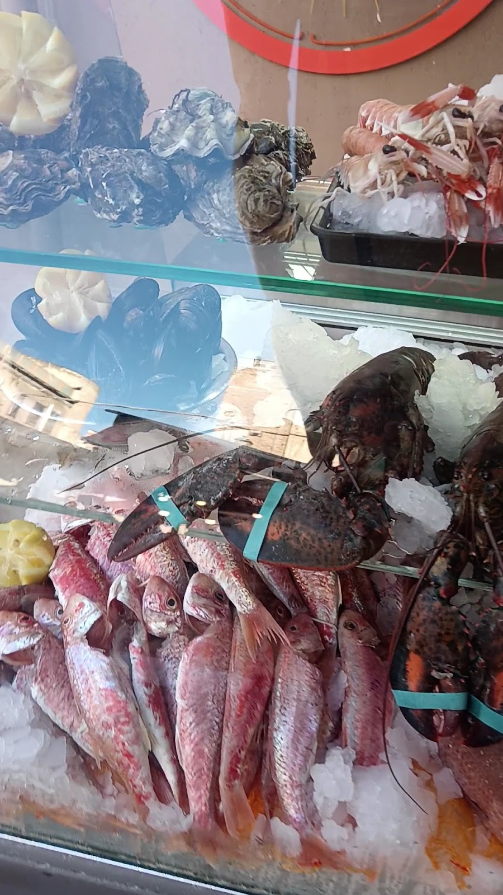
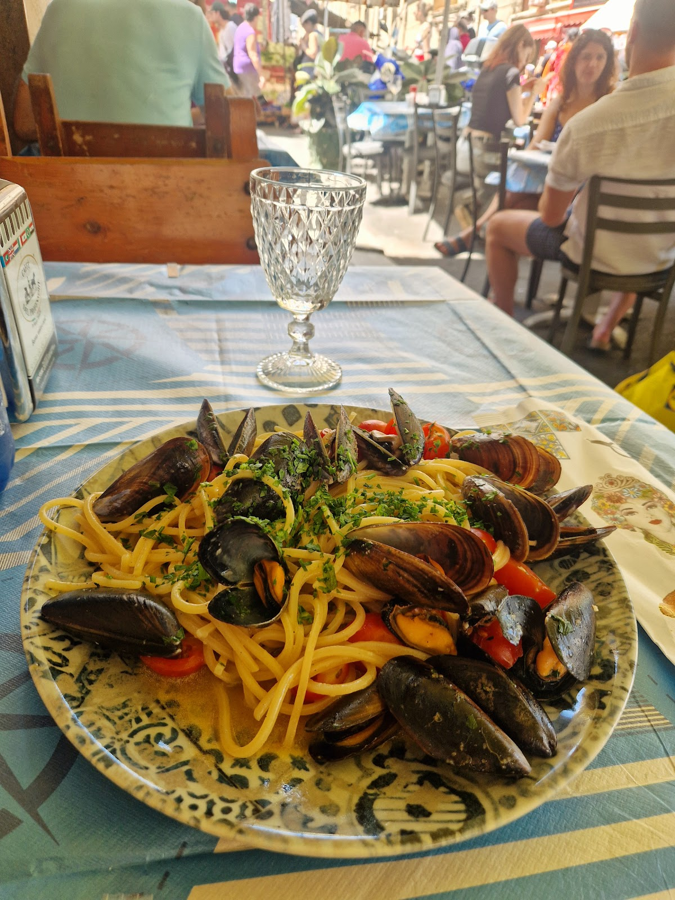
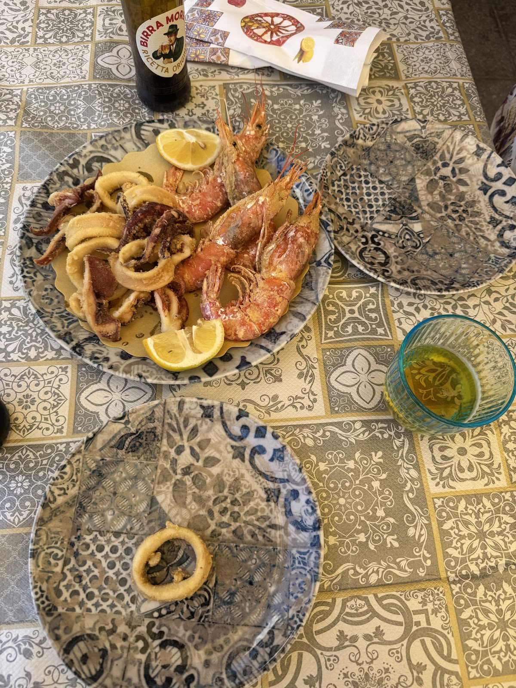
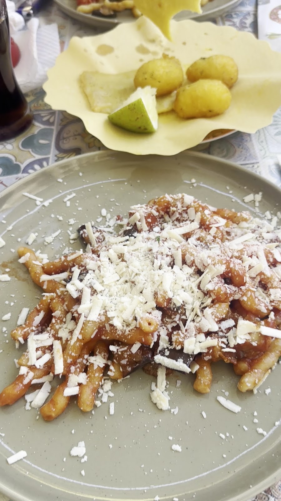
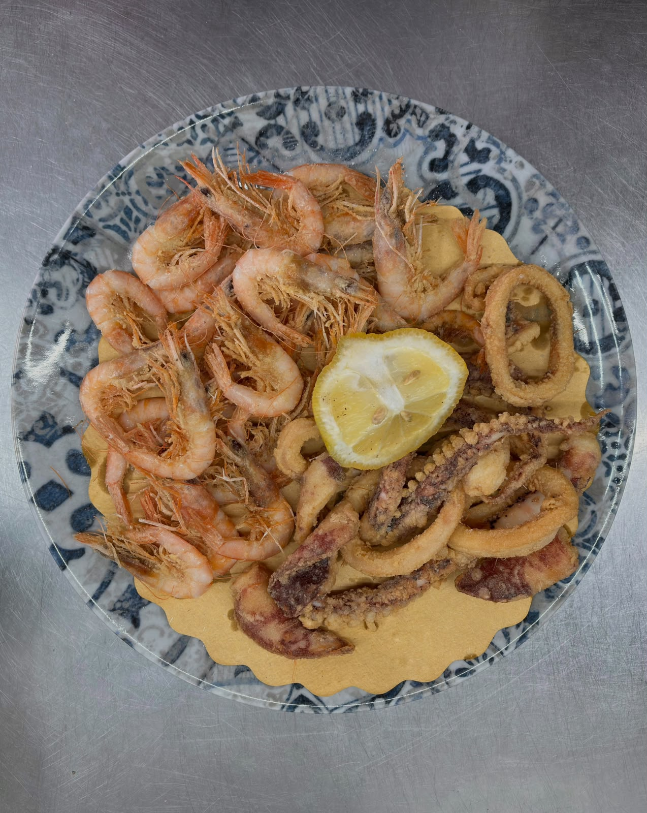
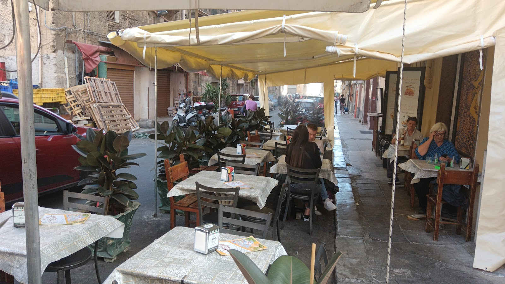

Trattoria di pesce fra le bancarelle di Ballarò: il pescato arriva dal mercato ogni mattina, la frittura esce nel coppo. A fresh-fish trattoria tucked between the market stalls.
Triglie, scampi, cozze e astici sul ghiaccio tritato: il nostro banco si riempie ogni mattina con quello che Ballarò offre. Quello che vedete sul ghiaccio è quello che trovate nel piatto.
Red mullet, scampi, mussels and lobster on crushed ice: our counter fills each morning with whatever Ballarò brings in. What you see on the ice is what lands on your plate.
Fuori, i tavolini stanno in mezzo al teatro del mercato — il posto più siciliano dove mangiare un'arancina di mare.

arrivato stamattina ✓
La specialità della casa, servita in mezzo al mercato — € 14

Calamari e gamberi sul piatto di maiolica, limone di Sicilia — € 16

La Norma con ricotta salata, e il coppo di panelle e crocché — € 12 + € 8


i tavolini stanno dentro il mercato — your table sits inside the market
"The seafood was incredibly fresh, and the whole experience felt truly authentic Sicilian. I loved sitting outside taking in the hustle and bustle."
"Panella and crocchè, then the catch of the day — a fantastic crustacean scampi."
"They procure fresh fish daily from the market and prepare everything cleanly and deliciously."
★ 4,8 / 5 — 601 recensioni su Google
Il banco segue il mercato di Ballarò: per l'orario di oggi scriveteci su WhatsApp — rispondiamo subito. Our counter follows the market: message us on WhatsApp for today's hours.
Via Dalmazio Birago 17, 90134 Palermo — mercato di Ballarò
Un messaggio e vi teniamo il tavolo fra le bancarelle. One message and we'll hold your table between the stalls.
💬 WhatsApp 📞 327 358 1227 Apri in Maps